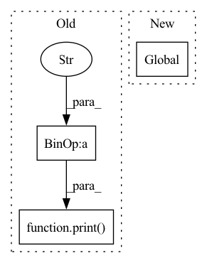

Pattern ID :37419
Before Change
def on_epoch_end(self, epoch, train_stats, valid_stats):
print("Epoch %d complete" % epoch)
print("Train loss: %.2f" % summarize_average(train_stats["loss"]))
print("Valid loss: %.2f" % summarize_average(valid_stats["loss"]))
print("Valid PER: %.2f" % summarize_error_rate(valid_stats["PER"]))
After Change
def on_epoch_end(self, epoch, train_stats, valid_stats):
print("Epoch %d complete" % epoch)
global train_loss
train_loss = summarize_average(train_stats["loss"])
print("Train loss: %.2f" % train_loss)
print("Valid loss: %.2f" % summarize_average(valid_stats["loss"]))
print("Valid PER: %.2f" % summarize_error_rate(valid_stats["PER"]))In pattern: SUPERPATTERN
Frequency: 6
Non-data size: 3
Instances Fragment ID: 107884319
Project Name: speechbrain/speechbrain
Commit Name: fba15c4a2cc8461ebd2e23979969162c6c529a99
Time: 2020-05-21
Author: plantinga.peter@gmail.com
File Name: recipes/minimal_examples/neural_networks/ASR_CTC/example_asr_ctc_experiment.py
M Class Name: CTCBrain
N Class Name: CTCBrain
M Method Name: on_epoch_end(4)
N Method Name: on_epoch_end(4)
M Parent Class: sb.core.Brain
N Parent Class: sb.core.Brain
M File Name: recipes/minimal_examples/neural_networks/ASR_CTC/example_asr_ctc_experiment.py
N File Name: recipes/minimal_examples/neural_networks/ASR_CTC/example_asr_ctc_experiment.py
M Start Line: 44
M End Line: 44
N Start Line: 50
N End Line: 52
Before Change
if params.use_tensorboard:
train_logger.log_stats({"Epoch": epoch}, train_stats, valid_stats)
print("Completed epoch %d" % epoch)
print("Train loss: %.3f" % summarize_average(train_stats["loss"]))
print("Valid loss: %.3f" % summarize_average(valid_stats["loss"]))
train_set = params.train_loader()After Change
if params.use_tensorboard:
train_logger.log_stats({"Epoch": epoch}, train_stats, valid_stats)
print("Completed epoch %d" % epoch)
global train_loss
train_loss = summarize_average(train_stats["loss"])
print("Train loss: %.3f" % train_loss)
print("Valid loss: %.3f" % summarize_average(valid_stats["loss"]))
Fragment ID: 107884330
Project Name: speechbrain/speechbrain
Commit Name: fba15c4a2cc8461ebd2e23979969162c6c529a99
Time: 2020-05-21
Author: plantinga.peter@gmail.com
File Name: recipes/minimal_examples/neural_networks/autoencoder/example_auto_experiment.py
M Class Name: AutoBrain
N Class Name: AutoBrain
M Method Name: on_epoch_end(4)
N Method Name: on_epoch_end(4)
M Parent Class: sb.core.Brain
N Parent Class: sb.core.Brain
M File Name: recipes/minimal_examples/neural_networks/autoencoder/example_auto_experiment.py
N File Name: recipes/minimal_examples/neural_networks/autoencoder/example_auto_experiment.py
M Start Line: 56
M End Line: 56
N Start Line: 60
N End Line: 62
Before Change
"building")
checkpoint_path.mkdir(exist_ok=True, parents=True)
else:
print(f"AdaS: Checkpoint path {checkpoint_path} doesn"t exist " +
"building directory to store checkpoints: .adas-checkpoint")
checkpoint_path.cwd().mkdir(exist_ok=True, parents=True)
with config_path.open() as f:
config = yaml.load(f)After Change
for k, v in config.items():
print(f" {k:<20} {v:<20}")
device = "cuda" if torch.cuda.is_available() else "cpu"
global best_acc
best_acc = 0 // best test accuracy
start_epoch = 0 // start from epoch 0 or last checkpoint epoch
if np.less(float(config["early_stop_threshold"]), 0):
print("AdaS: Notice: early stop will not be used as it was set to " + Fragment ID: 107884328
Project Name: mahdihosseini/rmsgd
Commit Name: 8ece8076ab99a313065ccb4221d8934922ed0ca1
Time: 2020-06-15
Author: mahdi.hosseini@mail.utoronto.ca
File Name: unpackaged/train.py
M Class Name: AnonimousClass
N Class Name: AnonimousClass
M Method Name: main(1)
N Method Name: main(1)
M Parent Class:
N Parent Class:
M File Name: unpackaged/train.py
N File Name: unpackaged/train.py
M Start Line: 144
M End Line: 265
N Start Line: 172
N End Line: 321
Before Change
def on_epoch_end(self, epoch, train_stats, valid_stats):
print("Epoch %d complete" % epoch)
print("Train loss: %.2f" % summarize_average(train_stats["loss"]))
print("Valid loss: %.2f" % summarize_average(valid_stats["loss"]))
print("Valid error: %.2f" % summarize_average(valid_stats["error"]))
After Change
def on_epoch_end(self, epoch, train_stats, valid_stats):
print("Epoch %d complete" % epoch)
global train_loss
train_loss = summarize_average(train_stats["loss"])
print("Train loss: %.2f" % train_loss)
print("Valid loss: %.2f" % summarize_average(valid_stats["loss"]))
print("Valid error: %.2f" % summarize_average(valid_stats["error"])) Fragment ID: 107884324
Project Name: speechbrain/speechbrain
Commit Name: fba15c4a2cc8461ebd2e23979969162c6c529a99
Time: 2020-05-21
Author: plantinga.peter@gmail.com
File Name: recipes/minimal_examples/neural_networks/ASR_DNN_HMM/example_asr_dnn_hmm_experiment.py
M Class Name: ASR_Brain
N Class Name: ASR_Brain
M Method Name: on_epoch_end(4)
N Method Name: on_epoch_end(4)
M Parent Class: sb.core.Brain
N Parent Class: sb.core.Brain
M File Name: recipes/minimal_examples/neural_networks/ASR_DNN_HMM/example_asr_dnn_hmm_experiment.py
N File Name: recipes/minimal_examples/neural_networks/ASR_DNN_HMM/example_asr_dnn_hmm_experiment.py
M Start Line: 41
M End Line: 41
N Start Line: 46
N End Line: 48
Before Change
def on_epoch_end(self, epoch, train_stats, valid_stats):
print("Epoch %d complete" % epoch)
print("Train loss: %.2f" % summarize_average(train_stats["loss"]))
print("Valid loss: %.2f" % summarize_average(valid_stats["loss"]))
print("Valid error: %.2f" % summarize_average(valid_stats["error"]))
After Change
def on_epoch_end(self, epoch, train_stats, valid_stats):
print("Epoch %d complete" % epoch)
global train_loss
train_loss = summarize_average(train_stats["loss"])
print("Train loss: %.2f" % train_loss)
print("Valid loss: %.2f" % summarize_average(valid_stats["loss"]))
print("Valid error: %.2f" % summarize_average(valid_stats["error"])) Fragment ID: 107884325
Project Name: speechbrain/speechbrain
Commit Name: fba15c4a2cc8461ebd2e23979969162c6c529a99
Time: 2020-05-21
Author: plantinga.peter@gmail.com
File Name: recipes/minimal_examples/neural_networks/speaker_identification/example_spkid_experiment.py
M Class Name: SpkIdBrain
N Class Name: SpkIdBrain
M Method Name: on_epoch_end(4)
N Method Name: on_epoch_end(4)
M Parent Class: sb.core.Brain
N Parent Class: sb.core.Brain
M File Name: recipes/minimal_examples/neural_networks/speaker_identification/example_spkid_experiment.py
N File Name: recipes/minimal_examples/neural_networks/speaker_identification/example_spkid_experiment.py
M Start Line: 42
M End Line: 42
N Start Line: 46
N End Line: 48